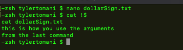

!
this is most commonly used to run the previous command again
!!
but, to execute a command from the history type a ! followed by the number of the command
we can also type (in zshell):
!-5
to the execute the command 5 back or whatever number we put in after the minus -
!-2
!-2 is the most useful
Very useful
type ! followed by a key word
For Example:
!cat
will run the last command that used cat
Also very useful
type ! followed by $
!$
this will use the argument from the previous command
